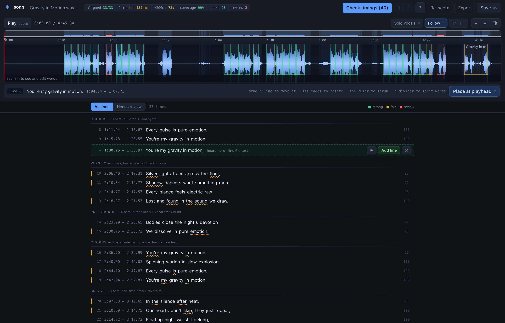
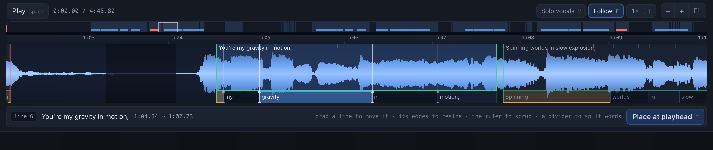
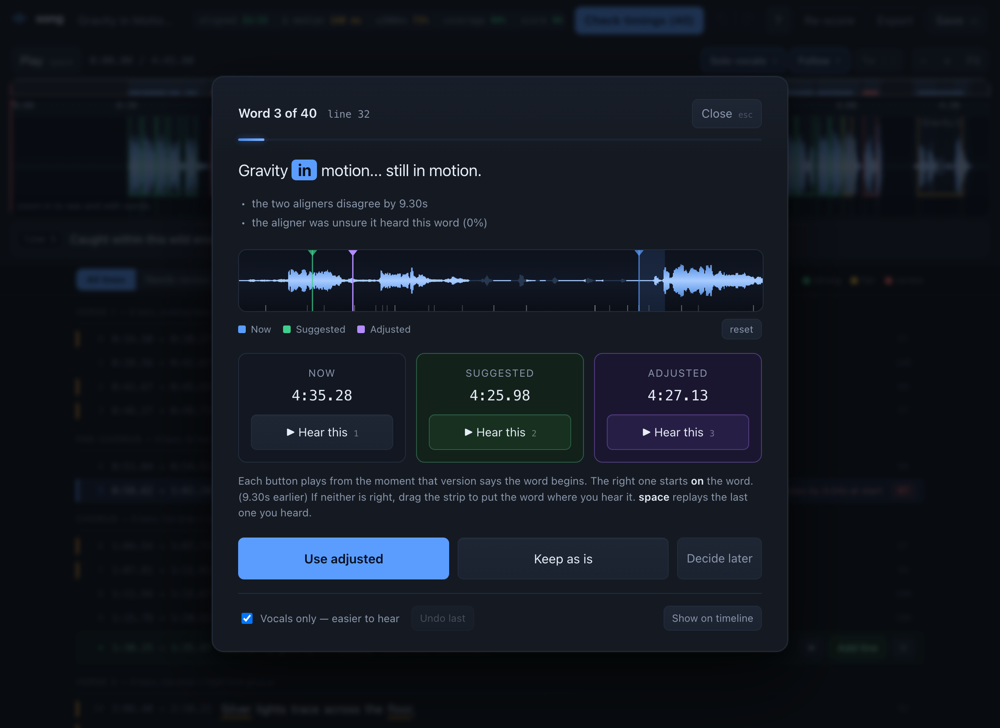
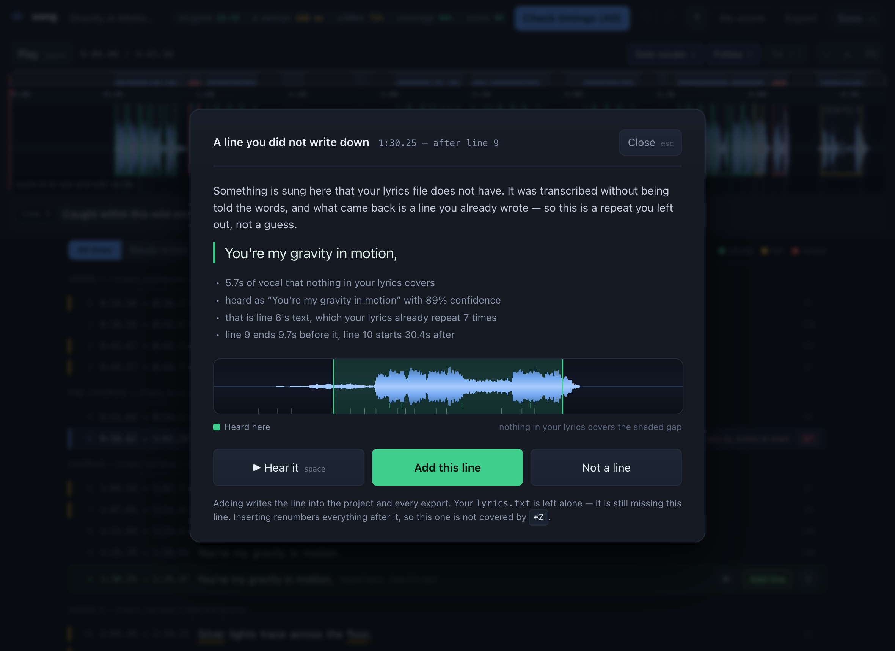

Drop in a track and a text file. Everything runs on your own machine.
.lrc · word-level .lrc · .srt · .vtt · .mp4

The premise
Transcribe-then-match falls apart on songs: a chorus that repeats four times gives four identical transcripts, and nothing says which is which. Since the lyrics are known, this is forced alignment — the text is consumed in order, so repeats resolve by position for free.

One aligner is not enough, and an AI-generated song has no reference timing file to check against. So three independent passes disagree in public.
Aligning against the stem rather than the mix is the single biggest accuracy win on dense productions — the aligners stop locking onto kick drums. It also makes is anyone singing right now? a reliable energy question, which the scorer and the UI both lean on.
A Whisper pass over a whole song desynchronizes: a 4-bar instrumental outruns its 30-second attention window and the rest of the track slides. Measured here, a global Whisper pass put the closing line at 2:37 of a 4:46 song. CTC emits per-frame probabilities and finds one globally optimal path, so instrumental stretches are absorbed as blanks.
With structure anchored, each section is cropped to ~20 seconds and re-aligned, where Whisper is both accurate and precise. Coarse-to-fine: CTC for structure, Whisper for edges. That took median cross-aligner disagreement to 140 ms.
Both aligners are told the lyrics, so both can be confidently wrong in the same place. A third pass is told nothing and reports what it hears. Where that lands is the tiebreaker, and the strongest single signal in the merge.
Accuracy you can check
There is no ground truth, so accuracy is estimated from evidence: six signals per line, rolled into a number. Lines that are fine carry no mark at all.
| Signal | Weight | What it catches |
|---|---|---|
| Cross-aligner agreement | 30 | Two model families disagreeing means the line is uncertain |
| Blind corroboration | 22 | Both aligners wrong together; whole sections misplaced |
| Vocal coverage | 20 | A line parked over an instrumental break |
| Onset proximity | 12 | Starts that don't land on a vocal attack |
| Word density | 8 | Spans far too long or short for the words in them |
| Aligner confidence | 8 | Low per-word probability |
A quality score that always says "fine" is worthless, so it was run against a deliberately degraded alignment — the same track aligned against the full mix, skipping vocal isolation:
| normal | degraded | |
|---|---|---|
| mean line score | 94.5 | 69.9 |
| vocal coverage | 99% | 9% |
| lines needing review | 2 of 33 | 11 of 33 |
| quality gate | passed | failed on 3 |
Read the flags as "look here", not "this is wrong." On this track both flagged lines are correctly placed — they are flagged because two model families disagree about them by seconds, which is the flags doing their job.
Where models disagree
Of 177 words, two aligners agreed on 137 — you never see those. Two were provably impossible and repaired without asking. The rest play you both candidates from the moment each claims the word begins. If neither is right, drag a third onto the waveform.

Snapping every word start to its nearest detected onset. It looks like free accuracy, but on this track 41% of word starts have more than one onset within ±150 ms — snapping would be a coin flip wearing a lab coat. Where two independent models disagree and both readings are plausible, no heuristic settles it honestly, so a human ear does.
Accepting an adjustment is one undo step, exactly like accepting a
suggestion, so ⌘Z after closing the sheet takes back the
timing and the queue mark together.
| Key | While the sheet is open |
|---|---|
| ← → | nudge your adjusted timing ±50 ms (shift ±10 ms) |
| space | replay whichever version you heard last |
| 1 2 3 | hear now / suggested / adjusted |
| enter | take the highlighted button |
Something extra
Lyrics get typed by hand, and hands drop things — usually a chorus repeat. The aligner can't notice: it is told the lyrics and consumes them in order, so the omission leaves 45 seconds nobody looks at. The blind transcription already heard it.

Finding candidates is easy. Refusing bad ones is the work: a vocal stem carries pads, "ooh"s and reverb tails, and Whisper will happily hallucinate "Thank you." over a fade. A candidate must clear four tests at once — at least three words, mean confidence ≥ 0.6, no overhang onto a neighbouring line, and a ≥ 0.8 text match to a line the lyrics already contain, covering ≥ 60% of it.
| gap | heard | conf | matches a line? |
|---|---|---|---|
| 1:20→2:06 | "You're my gravity in motion" | 0.89 | 1.00 — exact, 5/5 |
| 1:02→1:04 | "You're my" | 0.60 | 0.50 — 2/5, overhangs |
| 4:05→4:08 | "Ocean" | 0.29 | 0.21 — one word |
| 4:38→end | "Thank you." | 0.50 | 0.30 — hallucinated |
| five others | nothing transcribed | — | — |
One survives, and it is the right one. Accepting it takes the benchmark from 33/33 lines at 94.5 to 34/34 at 94.6, all 34 heard independently.
The payoff
The words fill in time with the vocal, off the timings you just checked. Behind them, the picture is generated from the same track — the section picks the colour, the beat drives the light, the mix scrolls along the bottom. There is nothing to supply.
python -m song video. Every pixel behind the words came
out of the audio — no footage, no still image, no template.
Because ASS subtitles have had karaoke tags since the VirtualDub era.
\kf sweeps a fill across a run of text over a given
duration — the classic per-syllable wipe — and this project already knows
where every word starts and ends. So the karaoke layer is a format
conversion and a burn-in, and font shaping, outline, shadow, wrapping and
antialiasing all come from libass rather than from code written here to
arrive somewhere worse.
ASS counts in centiseconds. Round each word's duration on its own and you lose up to half a centisecond a time — 13 centiseconds across a 100-word line, all of it landing at the end, which is the half nobody checks. Every duration here is instead the difference between two absolute positions on the timeline, so it cannot accumulate.
The space between two words is its own zero-length segment. Charge it to the word before and the sweep spends the tail of that word crossing whitespace, so the word finishes early; charge it to the word after and the word starts late. Both show on a fast syllable run, and late is the one that reads as broken.
| On screen | Driven by |
|---|---|
| the wash's hue | the section name in your lyrics file — every chorus is the same colour |
| the light's kick | the tracked beat, harder on the first of the bar |
| how wide it opens | the mix envelope |
| how bright it burns | the isolated vocal envelope |
| the ribbon | ±6 seconds of the mix waveform, scrolling |
| the sweep | the word timings in project.json |
Beats are tracked on the mix, not the isolated vocal — the stem has had the drums taken out of it, which is the signal beat tracking wants. And they are the beats librosa found, not a grid synthesized from the tempo: a grid is right for eight bars and then slides, and by the last chorus of a 4:46 song it is visibly ahead of the snare.
The generated frames are 640×360 and ffmpeg scales them to 1280×720 before libass touches them. Every layer down there is a smooth field, so the upscale costs nothing you can see, while rendering a quarter of the pixels costs a quarter of the time — and the words, burned after the scale, are still drawn at output resolution.
About four minutes for a 4:46 track at 720p on an M4 CPU.
--preview 1:04 renders 25 seconds instead, so trying
something is not five minutes a go.
Roughly five minutes for a five-minute track. Models download once; re-runs reuse the cached stem.
./setup.sh
./.venv/bin/python -m songpython -m song # open the app
python -m song track.wav lyrics.txt # align, then open it
python -m song align track.wav lyrics.txt
python -m song audit workdir/my-track # repair + list what needs an ear
python -m song score workdir/my-track # re-run the benchmark on your edits
python -m song export workdir/my-track
python -m song video workdir/my-track # render karaoke.mp4Everything lands in workdir/<track>/:
lyrics.lrc, lyrics.word.lrc (per-word, for
karaoke), lyrics.srt and .vtt for
ffmpeg -vf subtitles=, plus project.json —
word timings, per-line scores and the scorecard. song video
adds lyrics.ass and karaoke.mp4.
Lyrics input is plain text: one line per lyric line, a blank line
between sections, and a header naming each. [Verse 1],
Chorus:, (Bridge) and
Verse 1 (8 bars, pulsing bass) all parse.
Demucs on Apple MPS is broken under torch 2.5, and Whisper hits unimplemented sparse ops there, so it is CPU throughout. The timeline still holds 60 fps: a full waveform rebuild measures ~1.1 ms.